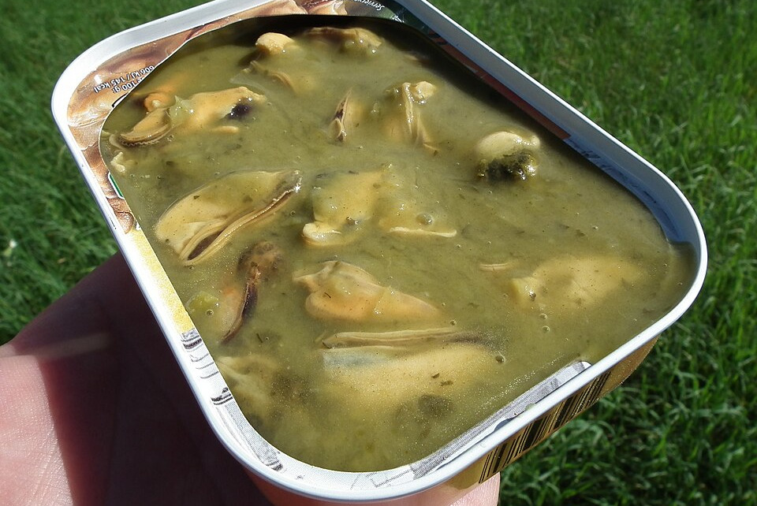

Image by MOs810 (modified) - Wikimedia Commons - CC-BY-SA-4.0
Mojo(Sauce)
Mojo is a traditional sauce and marinade in Cuban cuisine, characterized by its acidic flavor and strong garlic taste. It is used both as a marinade and as a finishing condiment.
Ingredients
- 1/4 cup olive oil
- 5 to 7 cloves garlic, finely minced
- 3/4 cup sour orange juice
- 1/4 cup fresh orange juice
- 1/2 teaspoon ground cumin
- 1/2 teaspoon ground oregano
- 1/2 teaspoon black pepper
- Salt to taste
Instructions
- Begin by cutting the onion in half, lengthwise, from root to stem. Cut off both the root and the stem. Peel off the outer layers of the onion skin until you reveal the first shiny yellow layer of the onion. Cut slices the length of the onion, going with the grain (lines running top to bottom).
- Add the sliced onion and oil in a small saucepan and place it on the stove over medium heat. Add salt and bring to a slight simmer. You want the onions to soften to al dente and turn slightly translucent, which takes about 5 minutes. If onions start to brown or burn, remove the saucepan from the burner and lower the heat. If the sliced onions have burned, throw the mixture away and start again.
- While the onions soften, peel and mince the garlic cloves and juice the sour orange. If you cannot find sour oranges at the grocery store, you can substitute with the juice of half a lime and a ¼ cup of orange juice.
- Once the onions have softened to al dente (soft crunch, and not mushy), add the minced garlic and stir while removing the saucepan from the burner. Lastly, add the citrus juice and stir. Taste the mojo and adjust as needed, adding a pinch of salt or an extra squeeze of citrus until you are satisfied. Then, pour it atop fried pork, chicken, boiled or fried yuca, or pour it into a gravy boat and set it on the table for your guests to help themselves.
- Store any leftover mojo in the refrigerator for up to a week. You cannot freeze it.
- What you need to know: the garlic may turn green or blue once the sour orange juice is added. This is a reaction between enzymes and sulfur-containing amino acids in the garlic, and it is safe to eat.
Home